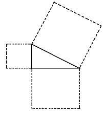

昨日は印度人の行に就てお話し致しましたが、印度人は苦行を以て宗教上大切な勤と看做したのであります、後世では他の宗教に於ても是を尚ぶに至りましたが、印度が一番古い、而して他の宗教に於ける苦行の事は皆印度が元になつて傳はつて來たものと考へられる、印度に於ては昨日もお話し致しました通り如何なる宗派のものと雖も皆苦行をやる、中には隨分非常な方法を以て苦行をなすのであります、何故に苦行を以て宗教上の大切なことと爲すに至つたかと申すことは、昨日もお話申した如く印度バラモンは其人生を四段に分けまして、先づ俗界の勤めを終ると世の中を退いて、神に勤める所の道を修める、俗界に於て俗の生活をなして居る間は、無論總ての自由を得ることが出來るが、修業の爲山林へ隱れると最早俗界快樂の要求を充しやうがなくなつてしまふ、先づ第一に襲ひ來るものは即ち饑渇である、水を得んと欲すれば山の中では仕方がないから、谷川まで下りて行かなければならぬ、食物を取るに至つては尚困難である、だからして草の芽、木の實位を取つて喰べるより他に途はない、着物になると愈六ヶしく、自分では着物を拵へることは無論出來ない、從つて木の葉でも綴つて體を覆うて居る位のことである、然う云ふ工合にして昔の人は山林へ這入つて修業をした、俗界の煩を避け眞正に修業をするには山へ這入るが第一の條件である、苦行は即ち是に附添うて來る自然の結果であつて、道を修めるには何うしても苦行を爲さなければならぬ、所で後世印度人の思ふには昔の豪い聖人と名づくるものは、皆其の苦行をやつて悟りを開いたのである、故に吾々も苦行をやらなければ悟りを開くことが出來ぬ、眞心に神に事へることも出來ないのであると、即ち伴生の結果が一變して唯一の手段と考へられるやうになり、苦行によつて初めて古來の大仙と同じく神と一體になつて神變不可思議の力を得ることが出來るのであると信ずるに至つたのである、序に言ひますが、日本でもお寺のことをアーランニヤ叢林と云ひ、又お寺には平常何々山といふ山號が附いて居るが、元來は山林であつたのである――叡山の如きは文字的に既に叢林であるが――昔時印度人が俗の生活を了つて修業する時は乃ち山へ這入り、人の容易に往かぬやうな靜かな所を選んで此に住して居つたのである、夫から佛教にも傳はつて僧侶の修業し居住する塲所を叢林といひ、又何々山と云ふやうになつたので、此は元來バラモンの遺習である、現に今でも暹羅では上國王より下庶民に至るまで一度はお寺に這入つて僧侶の生活をしなければならぬことになつて居る、是もバラモンが總て一定の時期に至れば叢林の生活をしなければならぬと云ふのと同じ譯である、又日本でも色々の苦行をなすものが今でも隨分澤山にある、例へば千葉の成田の不動の如きに於ては、印度に於けると同じく斷食などが盛に行はれて居るのであります、佛教に此の苦行の［＃「苦行の」は底本では「若行の」］法が傳はつて居るやうに、耶蘇教にも此思想が這入込み、カトリツクの方では好んで苦行をなす、彼等も矢張叢林の生活を送り、山へ這入つて饑渇と戰ひ、俗心に克ち、見苦しい着物を着て、一生懸命にバイブルを擴げて研究して居つた、テレザーと云ふ人はカトリツクにおきましては聖人と稱せられた人であるが、此の人は好んで苦行を爲すといふよりも寧ろ苦行を樂んで居つた人である、彼は自ら自分の第一に好む所、最も欲する所のものは苦行である、自分は衷心からして何うか予をして苦ましめよ、然らざれば我をして死せしめよと神に向つて祈願したことの幾回なるを知らぬと云つて居る、苦行は勿論字の如く苦しいことには相違ないが、宗教上の熱心が激して來ると苦行に從事することが却つて面白くなるのである、學術を研究する者や、事物の發見でもなす者は、夏日熱苦しい時節でも一生懸命に研究して居る、傍から見れば夏の酷暑の時だけは休んだら宜からうと思はるるけれども、本人自身には何んとも思はぬ、却つて是を以て面白いと考へて居ると同じ事である、斯樣な譯でありまして印度からして波斯、亞拉比亞を經、其の思想慣習が次第に歐羅巴に這入つたことは色々の點に於てあるのでありますが、苦行なども確に其の一であります、印度におきましては王家に生れ、王家に育ちたるものが、其家を棄て山林に隱れたことは澤山にある、御存知の通り佛も亦其内の一人である、而して宗教に熱心にして至心苦行に從事すれば、何んな取るに足らぬ人間でも非常に恐るべき力を得ることが出來ると云ふ信仰も、後世になつて初めて起つた譯ではなくして、極古い時からして既にあつたのである、印度には紀元前五世紀即ち今からは二千四百年ばかり前に出來ましたマハーブハラタと云ふ有名な詩篇があります、其の詩の中にも或人間が矢張前に言つたやうに山林へ這入つて修業し、頭髮は蓬々として亂れ、體には木の皮の編んだものを着け、手足身體總ての處へ泥を塗り――是は一寸妙なことであるが、今でも斯やうな慣習が印度に殘つて居つて今は灰を塗る、額の處や鼻や胸へ或は白、或は赤い灰を塗つて置く――夫れで山間獨住饑渇を忍び且多年の間爪先で立つて居る――是も暫くなら誰でも堪へ得らるるが、朝から晩まで何年もと言つたら中々堪へらるる者でない――而してお負けに眼を開いて天を見て居る――是も何でもないやうに考へらるるが印度は熱帶國で中々苦しいことである――斯う云ふ行をやつた、所が神樣が之を見て思ふには彼はアヽ云ふ困難な苦行をやつて居る、彼が苦行を成就した曉には何んな恐しい力を得るか知れぬ、今の中に早く是を妨ぐるに如かぬと考へ、或は女を見せて誘惑したり或は色々苦しめて見たが、彼は少しも之が爲に屈することなくして遂に其の苦行を成就した、で神は何うしても彼に神變不可思議力を與へなければならぬやうになつた、彼は苦行を成就して得々と宅へ歸り、是までの弊衣を棄て美服に替へ啻に安樂の生活を送つたのみならず、其の神通力によつて月をして毎晩自分の住んで居る處の町を照らさしめたといふことが書いてある、實に日月の行動でも自由自在に變ずることが出來ると考へ、而して然う云ふ不思議な力も苦行によつて得られるものであると云ふことは、紀元前四五百年の頃から既に存在した信仰であつたのである、で苦行さへすれば何んな不思議なことも出來、神と雖も又彼を如何ともすべからざるので、天人共に恐れざるを得ざるものであると考へて居つた、でありますから隨分古い時代からして苦行の事は傳はつて居ります、佛教の古い經文の内にも説いてある所がある、其の當時の方法を見ると實に今やつて居る所と殆ど違はない、ドウ云ふことをやつたかと云ふに、先づ第一に書いてあるのは、二日三日四日五日乃至七日間も斷食をやるとか、或は食物に於ては果物或は野菜ものばかりを食つて居るとか、最も妙なのは牛糞を食とするとか、或は鹿糞ばかりを食用として居るものもある、又手を擧げるとか――是れには片手を高く上に擧ぐるものと兩手を擧げるものとある――是も長くやつて居るのは中々困難で後にはコワ張つて最早や手が下に下りぬやうになる、之を下す時には油のやうなものを塗つて摩擦して段々と下す、常態に復する迄には大抵三箇月を要するといふことである、又床には坐らないで始終踞つて居るものもあれば、荊棘の上に坐するものもある――是れは今でもやりますが今は刺でなくして釘の上に坐つて居たり、又は靴の中へ釘を打つて是を穿いて居る――或は裸體となつて牛糞の上に坐する――牛糞は元來印度人の非常に神聖なものと考ふる所で、穢い所を奇麗にするには牛糞を塗る、牛は大切な神獸であつて牛を殺す者は人を殺したよりも罪は重いのである――夫から又日中に三浴し或は一夜に三浴する――是は三遍水を浴びるので、印度には到る處に池のやうなタンクがあり、其の内へ這入つて水を浴びて居る、其水溜は又風呂塲ともなり洗濯塲ともなれば田の灌漑にも用ひられる、以上の行は佛時代にやつて居つた一例であります、今の苦行者も此等の方法は皆やつて居りますが、段々と新しい工夫を考へ何でも人のやれないやうなことをなすものもある、現時普通に行はるるものの二三を云へば、先づ五火の苦行があり、是れも昔からあつたものであるが、四方に薪を集めて火を燃やし自分は眞中に坐つて居る、其の坐つて居る前にモー一つ火を焚くこともあるが、又前の火だけは是れを止め苦行者が天の日を凝視して居ることもある、何れも五火となる、寒い所なら宜いが、印度のやうな熱帶地方での火攻めは中々容易なことではない、まだ不思議なのは木の枝から繩を下げて自分の胴を結はひて、そして斜になつて前方へ寄掛つて居つたり、或は片足で立つて居る、是時は片方の手で一足を上へ持ち擧げて居るのである、モツと不思議なのは木を三本斯う云ふ工合に寄せ、上から繩で足をクヽり附けて倒まに釣り下つて居つたり、又は太い鎖の長いやつを首の邊から身體全體に卷附けて立つて居るのもある、然う云ふことをやつて夫で以て宗教上大切な務をなすものと考へて居る、此等の苦行者には無論住所と云ふものが一定して居らない、方々彷徨うて居つて或は寺或は河岸或は木の下などへ往つてやつて居る、斯う云ふ行者も生きて居る間は食はなければならぬが何うして食物を得るかと云ふに、行をして居る間は自分で食物を取り來ることは出來ないが、ソコは印度であつて中々重寳に出來て居る、或る行者が何處其處の木の下に居るとか、或は水邊に居るとか云ふ評判が立つと其近邊の者は男女老少を擇ばず、皆態々供養の爲食物を持運んで來て呉れるので少しも不自由はない、而して苦行が終ると云ふ時は動もすると何千人何百人を限つて施餓鬼のやうな事をやる、此時も行者が一度信者に此事を言ひ出せば忽ちに其評判が擴がつて、諸方の信者が爭うて色々な品物を持つて來て山の如くに積み重ねる、是で以て供養をやるのである、行者は一錢も費すことなくして尚多くの餘裕を生ずるのである、下等なものになりますると大抵四月頃盛に苦行を行ふが、是れは日本の山伏がやると同じやうに或は火の上を走るとか、或は鐵の串をば舌に刺したり、頬に刺したり腕へ刺したりする、此等の下等な見世物的苦行者の目的とする所は、唯信者の供養を受け金錢財物を得るが爲である、兎に角斯る不思議な事を近來に至るまでやつて居るのである、而して其の方法も精神も共に皆二千年以前のと殆ど變らない、其の反映が面白い、一方に汽車がかかつて居り片方に然う云ふ苦行をやつて居る、之を惡く云へば印度人は畢竟光明の世界を去つて好んで暗黒の世界に就て居るのである、文明の利器が如何程あつても彼等には一切用がない、善くいへば物質的文明の世界を去つて精神的の世界に安住して居るのである、物質的科學の研究は彼等の顧みざる所であつて、昔から主として精神的の宗教、哲學と云ふ部分にのみ其の精力を傾注したが今は唯其の形骸を守るのみである、實に宗教は印度人の生命とする所であつて、人生の最も大切なものとして居るのである、で英人が印度を領するにも直接宗教には一切關係しないことを以て其の方針として居る、印度人には宗教より大切なものはないのであるから、少しでも是に干渉したならば彼等は死に至る迄反抗するか然らざれば皆移轉してしまふ、印度人の移轉は實に簡略なもので、何時何處へでも行くことが出來る、であるからして誠に宗教の事に關係すると始末に負へないことになる、印度人は政治上の事に就てはマルで關係しない、誰が來て王になつても無頓着である、政治上の事などは俗な事である、自分の生命は宗教の中に在りと考へて居る、從つて一方に於ては色々不思議な迷信も生じますし、又色々不都合な事も出來ましたけれども、兎に角精神的の方面に於ては世界に甚だ偉大なる貢獻を爲して居ると云ふことも忘るべからざることであります、是れからは其の最も重なる文學と哲學と宗教との三項に就き少しく印度が世界に於て何れだけの貢獻を爲したかと云ふことをお話しやうと思ひます。
先づ文學の方面からしてお話致しますが、文學の方面におきまして先づ御話しなければならぬのは物語のことである、物語は世界文學の中印度が一番古いのであつて、而して此の物語は印度文學の中の甚だ大切な部分を形作つて居り、是が世界の文學に對し大なる影響を與へたものである、佛教を御存じの御方は大抵知つて居らるるでありませうが、佛教の經文の中に本生經と云ふものがある、是は佛の前世に於て何う云ふものになつて法を説いたかと云ふことを書いたものである、中には或は動物になつたり、或は商人になつて居ることもあり、樣々に體を變へ形を異にして法を説いたことが書いてある、本生經とは印度に昔から物語があつて、日本の勝ち／＼山桃太郎のやうな種類のものであつたが、佛は之に因つて其法を説いたもので、古代から人の口に傳はつて來た卑近な物語を佛教的に換骨脱胎したのである、今殘つて居る本生經は隨分澤山あつて、中には非常に面白いものもあり、又詰らぬものもある、又長いのも短いのもありますが、本生經は印度佛教の中に於て一番古いものに屬するのであります、夫から後に五卷書 Pancatratar といふものが出來た、此は南方印度の或國王が自分の子供を教育する爲に、一人のバラモンを頼んで人間の道を教へて呉れと云ふことを任した時に其バラモンが此の書を編纂して教へたと云ふのである、此書の中にも色々な話が書いてあるが全く本生經によつたのである、本生經は佛經的に出來て居るが是はバラモンの書いたものであるから、バラモン主義になつて居る、而して此が世界の文學に於て大變な影響を與へたのである、紀元後五百年頃波斯の王のコスル、ヌシルヴアン（Khosru Nushirvan）と云ふ人が自分の侍醫からして印度には誠に不思議な藥がある、此の藥を飮むと總ての人間が不死なることを得ると云ふことを聞き、何うかして其の藥を得たいものであると考へまして、此藥を求むる爲に特に其侍醫を印度へ遣はした、侍醫は王命に依つて其の靈藥を尋ねに往つたが何うも見當らない、何しても判らぬから已むを得ず或るバラモンの物識に逢うて之を問ふた、實は私は王の命令を受けて靈藥を求めに來たのだが何處に是を求むべきであらうかと、バラモンは之を聞いて云ふには夫れはあるが其靈藥は文字通りに解釋すべきものではない、印度には智惠の書といふものあるが、是を讀むと愚も賢となり、穢れたものは清淨となり、罪あるものも罪なくなる、是れが即ち靈に死する者の能く甦へり、不老不死を得る不思議の妙藥であると言つた、夫から彼の波斯王の侍醫は遂に其の書物のパンチヤタントラを得て歸つた、波斯へ歸つてから其の旨を王に言上し初めて之を波斯語に飜譯した、此の飜譯した書物の標題は是をカリラク、ダムナグと云ひます、此標題のカラタカ、ダマナカ（波斯音に轉訛して前の如くいふ）と云ふのは二疋の山犬の名であつて、實は彼の書物の第一卷目の主人公となつて、其の話の中に屡次出る所のものであるから、其主人公の山犬の名を取つて書物に名附けたのである、此譯が段々西方へ傳はりまして七百年の中程には波斯譯から更に亞拉比亞譯が出來た、ピルパイの物語と云ふ書物も亦是と同じである、サンスクリット語でヴイドヤーパチーといふ語は學者の意義で、夫れが訛つて亞拉比亞語ではビドバーとなり、更に近世歐羅巴語に轉じてビドパイ或はピルパイと成つたのである、亞拉比亞語の譯が出來てから又三百年ばかり後に於て希臘譯が成り次に羅甸、西班牙、ヘブリユとなり、夫から近代歐羅巴の伊太利語、佛蘭西語、英吉利語、獨逸語と方々に譯されて居る、エソツプ物語のエソツプは希臘の物語記者でありますけれども、學者に依つては實際エソツプといふ人は居ないのであると迄疑ふものもありますが、兎に角其のエソツプ物語と名づけて居るものの内にある多くの話は前の五卷書にあるものと一致して居る、而して此物語が諸國を遍歴する中には色々の標題に變つて居る、例へば伊太利譯には道徳哲學といふ堂々たる名が附けられ、佛蘭西譯の中には光明の書と標題を附けたのもある、色々其の名は違つて居るがツマリ此物語が元になつて出來て居るのである、諸君も御存じのアラビヤンナイトと云ふ書物は、元來印度に出來たのではありませぬが、併し印度の物語を手本として書いたものである、而して其の教訓變遷の工合が又中々面白い、一番初めは佛教徒の集めて置いたものであるから佛教主義の教訓書であつた、が次にはバラモンの手に移りバラモン教的のものとなり、波斯、バクダットを經、君士坦丁堡に入り、夫から歐羅巴に這入り耶蘇教的のものともなつた、尚其の旅行の途中には物語の消滅してしまつたものもあれば、段々變形して顯はれ來つたものもある、長い道中のことであるから自然所に應じて形が變つたり、又無くなつたものである、佛のラフオンテーンの話も畢竟は皆カリラグから出たもので其の元は五卷書である、最後に其の話の變化の仕方を一寸述べて見やう、ラフオンテーンの物語の七卷の十に牛乳搾の女の話がある、其の話の大體は次のやうなことである、或時牛乳搾の女が牛乳を搾つて其の搾取つた甕をば頭へ載せて市塲へ賣りに行つた、が未だ年若い女であるから途中色々の空想を懷いた、今頭に載せて居る牛乳を市塲で賣れば是だけの利益がある、其の利益で鷄卵を買うて而して雛を拵へる、夫を賣ると是だけの利益になる、利益が段々大きくなるから今度はそれで豚を買ふ、夫を大きくして又之を賣ると大丈夫牛が買へる、牛が子を生む、さうすれば自分が立派な牛乳屋の主人となることが出來る、實に愉快であると市塲へ行く間に考へた、其のおしまひの牛乳屋の主人となる考へを起した時は最早現在出世したやうな心持で嬉しくて／＼雀躍した、所が頭の壺はコロリと落ちて甕は破れ牛乳は流れ去つて迹方も無くなつてしまつたと云ふ話がある、ツマリ空想に耽けるの馬鹿氣たことを書いたのであらうが、是がパンチヤタントラの本に出てあるのである、是に依るとバラモンの坊樣が托鉢して鐵鉢の内に米を貰つて來、其れを寢床の隅に懸けて寢た、而して夢に色々の事を考へた、ドウか今年は饑饉でありたいものだ、饑饉年であれば米が高くなる、そこで此の鐵鉢の米を賣ると非常な利益を得る、其の儲けた金で自分は奇麗な家を拵へ、而して奇麗な女を貰つて自分の細君にしやう、まだ其の妻君には澤山持參金を附けて貰はなければならぬ、夢では何事も意の儘に出來る、彼は忽ち是を實現した、而して細君を娶つてモー子供が出來た、或日子供が自身の傍で遊んで居つた、細君に子供を其方へ連れて行けと云ふたが、細君は自分の言ふことに從はぬ、彼は怒つて足を擧げて蹴倒さんとした、其の時夢中に彼は自分の足を擧げて鐵鉢を蹴放したからたまらぬ、米は四邊に散らばつて最早や拾ふことも出來なくなつたと云ふ、これが其の話の大要である、前の牛乳女の話と唯其の肉を異にするのみで骨は全然同じである、斯う云ふ工合に段々と變つて往つたのである、尤も一例を擧げるとパンチヤダントラと云ふ五卷の書物に山犬の話がある、或る貪慾な山犬が一日山を驅けて居る時に、偶と獵人が死んで居るのを見附けた、而して獵人の傍には弓もある、山犬は宜い獲物があると考へ直に獵人を食はうとしたが、併し獵人は旨さうだから後の樂として、先づアノ弓から食つてやらうと斯う考へて其弓弦を食始めた、すると弓弦がパツと切れた、切れた拍子に弓が山犬の眉間に當つて山犬は死んでしまつた、と斯ういふ話がある、所がラフオンテーンにも是れと殆ど同じことが書いてある、が唯山犬は狼となり、弓に觸れた時矢が當つて死んだと變つて居るのみである、然う云ふやうに地方々々に適するやうに次第に變つて來たものである、是等が即ち文學上の物語の話で、近世歐羅巴に於て最も多く人の愛讀する物語の多くは印度の材料からして變化し來つたものであることを證據立てる、又佛の傳記は印度に於ては中々勢力があつたもので、紀元後四五世紀以後には益其の想像を逞くし、其の文章を修飾した、その傳記が口から口へと傳はつて亞拉比亞からシリアへ入り此にヨザフアート物語なるものとなつた、此は耶蘇教では一時バイブルに次ぐ大變大切なものとなつて歐羅巴人の愛讀する所であつた、是れも佛教文學が歐羅巴に至つて耶蘇教文學と成つて、人心に大なる影響を與へたものであります、夫れから佛教の傳播に由つて支那や日本に於ける文學に影響を與へたことは今更論ずるに及ばない、近代西洋文學でも直接間接に印度の文學から尠からぬ影響を受けた獨逸の有名な作者シルラーの脚本にマリア、スツアルトといふのがあります、是れは其の全部ではありませぬけれども、或一部分は印度のカーリダーサと云ふ有名な作者の書いたメガヅータ（雲の使）と云ふ脚本から脱化し來つたものであるといふ、又ハイネの蓮華、其の他短かな詩の中にも、印度の思想を土臺として作つた所のものがあります、尚近來に於ては有名な獨逸の詩人リユツケルトに婆羅門智と云ふ作がある、是れは彼の英吉利のマクスミユラーが非常に賞賛し、ゲーテーも尚及ばぬ所があると云つて居るものである、是は名の通りバラモンの思想を詠じたので、全く印度の思想から出來たものである、以上論ずる所に據つて之を見ると西洋に於ても東洋に於ても、古代にあつても將た近代にあつても、印度の文學は實に大切なる地位を世界の文學の上に有するものと言はなければならぬ、從つて又直接若くは間接に東西の人心を支配したことも決して少からぬと考へる、文學の事は先づ是れだけにしておいて、次には哲學に就き少しくお話致したいと思ひます。
［＃改ページ］
今日は印度の哲學と宗教とが世界に及ぼした影響に就き、極大體の事を御話して置きたいと思ひます。
哲學を御研究なさつた御方は大體御存知であらうが、紀元前五百年の中程に生れた學者で有名な希臘の哲學者ピタゴラスといふ人がある、是れは釋迦と殆んど同時代の人である、この人は諸方へ旅行をした人で希臘人でありますが、小亞細亞、埃及にも行つて居り、或は波斯を經て印度まで旅行をしたといふ説もあります、この人は餘程不思議な所謂ピタゴラス團體なるものを作つた、この團體は今から申しますると一寸學校の樣な或は塾のやうなものでありまして、一定の年限の間澤山の弟子が諸方より集まり來つて先生の下に修業する、希臘ではこの時代まで個人々々で學術を研究するものは隨分あつたが、講義をするといふはピタゴラスが初めてである、而して此の團體に於ては身體と精神との修養を基とするもので普通五年の年限を定めた、此に一つ不思議な事がある、即ち彼等五年の間は沈默を守るといふ事が法則になつて居つて、五年の修養の時代は己を修むる時代であるから、人に向つて講説するといふやうな事が出來ないのである、尚不思議な事はピタゴラス自身が常に白衣を着て居つた、是れは當時の希臘人には例のないことである、又食事の時には麺包と水とを食ひ、酒は一切飮む事を禁じてある、夫から又肉も食はない全く蔬食である、モウ一つ面白い事は蠶豆を食ふ事が出來ない、さういふ不思議な團體を作つたのであります、所がこの團體は後世中々有力なものとなつて伊太利、希臘の間に於ては政治上にこそ關係せぬが總ての社會上の事柄に於ては大なる勢力を持つて居つたものである、近來の研究に依るとピタゴラスの説或はピタゴラス團體の學則等に於ては、どうしても印度から得來つた所があるに相違ないといふ事が判つて來たのである、第一にピタゴラスの唱へて居る不思議な事は輪廻の説である、先日もいつたが印度では古くから輪廻といふことを説き、人類は其の業の善惡により、上は天界より下は植物界に至る迄輪廻轉生するといふことを唱へたのであります、がピタゴラスも亦此輪廻の説を説いて居る、希臘には未だ曾てなかつた説で、此人が初めて唱へたのである、從來の史家もピタゴラス輪廻の説の何處から起つて來たものであるかといふ事を考へては居つたが、果して何處から得來つたといふ確な事は判らなかつた、有名なる史家のヘロトタスは是を以て埃及から得て來たものであらうと考へて居つた、所が埃及には輪廻の説は少しもなかつたのである、御存知の通り埃及にはミイラといふものがある、人が死ぬと其體をそつくり殘して置く、といふのは我々人間が死ぬと魂は一時何處かへ行くが又元の肉體へ歸つて來るといふ信仰から其の肉體は其の儘殘して置かなければならぬと考へ、ミイラ漬にして取つて置くのである、是に依つて見ても埃及には輪廻説のあらう筈がない、所が印度に於ては輪廻説は釋尊以前盛に説かれてある、善事を行へば善報があり、惡事をすれば惡果があるといふことは印度人の動かすべからざる信仰である、それから尚ピタゴラスは肉體を牢屋に比較して精神、魂といふものはこの牢屋に這入つて居る故に絶えず苦患を受ける、實に肉體といふものは惡いものであると考へて居つた、肉體を牢屋に比するといふ事も印度には釋迦以前からある所の思想である、而して人はどうかして精神をこの牢屋の肉體から救ひ出さなければならぬと考へ、此に樣々の解脱の方法が案出されたのであります、この輪廻の説や牢屋の説を考へるとピタゴラスの説はどうしても印度から得來つたものではなからうかといふ疑ひが起らざるを得ない、尚又印度人は肉食を禁じて居る、極古い時代には肉食もしたものでありますけれども、段々後になりますと肉を食ふのは惡いといふ考へで蔬食のみを取つた、是れは佛教ばかりでなく他の印度人も總て蔬食をやつて居る、無論酒を飮むことも惡いのでありまして、佛教の五戒の中にも又バラモン教の五戒の中にも之を禁じてある、併しながらピタゴラスの是を禁じたのは偶然の暗合であるとしても、蠶豆を喰べないといふことは實に不思議といはなければならぬ、印度に於ては極古い時から蠶豆は不淨のものとしてあつて、食ふべからざるものといふ思想が行はれて居つた、で紀元前數百年以前に出來たバラモンの書物の中にも蠶豆は不淨のものであるから食つてはならぬ、又是を神に供へてはならぬとある、斯ういふ事を以て東西暗合に歸するのは寧ろ奇怪な説明と言はなければならぬ、でドウしても是れは昔印度からして希臘へ傳はつた思想であらうと思ふ、夫から尚ピタゴラスは哲學者でありますけれども、數學にも長じて居つたといふ事であります、幾何學にある問題（別圖參看）の直角三角の弦の上に作つた所の方形は他の二邊の上に作つた方形を合せたものに等しいといふことの解釋は、西洋ではピタゴラスが初めてなしたものであるといつて居る、が是れもピタゴラス自身が考へ出したものではないやうに思はれる、印度に於ては紀元前七八百年前既に數學は中々盛に研究されて居る、是れは神に事へる所の儀式の關係から研究しなければならぬやうになつて來たのである、而して當時に出來た所の數學の書物も今に殘つて居るが、其の書物には明かに此の問題が證明されて居るのであります、でありますから他の點と併せ考へて、是もピタゴラスが印度から受けたものであらうと思はれる、少し話が別途へ入るが今は日本でも一般に用ひて居る亞拉比亞數字（0123456789）といふものが傳はつて來てから數學は非常に發達することが出來、數學も歴史の上には亞拉比亞文字の功は實に大なるものであるが、是を亞拉比亞では印度文字といつて居る、元來是れは亞拉比亞文字ではなく印度の文字で、以前亞拉比亞から傳へたから西洋人は亞拉比亞文字というて居るが、亞拉比亞では印度人から傳はつたものであるので印度文字といふ、印度から亞拉比亞へ傳はつたのもさう古いことではない、大抵紀元後八九世紀頃である、是に就て面白い話がある、從來西洋人は何でも自分等の國の文明は希臘から起つたと考へ、總て希臘を元とする説が行はれて居つた、近代になつて東洋殊に印度の學術が開け、是を研究したものは西洋の文學も必ずしも希臘が元でない、印度から起つたものも夥しい事であるとの説を立てた、然し昔の學者は容易に聞入れなかつた、其處で所謂亞拉比亞數字と印度の數字とを並べ書いて見せた所が、其似寄りの甚しきに驚き、是から追々希臘本元説も衰へて來たといふことがある、元來印度でも希臘でも、又其の後の羅甸であるにしても、尚下つては近世の歐羅巴語であつても、言葉の中には似寄つたのが澤山ある、希臘人でも印度人でも元は同一人種の分岐したので、一方は印度へ下り、一方は希臘に移つたのであるから、古い言葉は雙方共今に存して居るのである、例へばサンスクリツトのアカは水の事、羅甸語でもアカ、英語でも水族館の事をアカクアリユム、水成岩をアクエアス、ロツクと云ふ、其のやうな事は澤山ある、文典の上にも非常な似寄がある、斯樣なことは實に不思議のやうでありますけれども、其の謂はれを質して見れば、何でもない當然のことである、夫からしてピタゴラスは五元素説を唱へた、佛教でも地水火風空を五大と言ふ、大とはエレメント、元素の事です、希臘でも地水火風を四大と説いて居つたが、地水火風空の五元素とは言はない、支那の五行の木火土金水といふのも稍似寄つては居るが、是れは印度と全然無關係である、兎に角希臘では地水火風を以て四の元素であると看做して來たが、ピタゴラスに至つて初めて地水火風空の五大といふことを説き出した、此の五大の思想は、印度に於ては古くから行はれて居り、決して珍しいことではない、五大が解散するといへば人間の死ぬるといふことを意味する、で此の説も亦ピタゴラスの印度と同じ所である、夫からモー一ツお話して置かなければならぬのは、ピタゴラス團體といふものは、精神を修養する目的の爲に音樂を用ひたのである、氏以前希臘には音樂と云ふものはない、ピタゴラス時代に於て、初めて音樂が始まつて來た、所が音樂も印度には、神前で歌を讀み、詩を誦する時に之を併せ用ひ、非常な古くから開けたもので、西洋の音樂の譜のド、レ、ミ、フ、ハ、ソ、ラ、セ、ドと云ふのも印度が元で、印度から歐羅巴に傳はつたのである、だから單純ながらも音樂の基礎は印度に始まつたと言つても宜しい、であるからピタゴラスが果して音樂を以て其精神を柔らげ、修養の助にしたとすれば、其の思想若くは技術は、矢張印度から得て來たものに相違ないと考へる、一般の人はピタゴラスが音樂を始めたと云うて居るが、是れは間違であらう、此等を綜合して考へるとピタゴラスの思想の中には印度から得來つたものが澤山あるやうである、而して古くから印度の思想慣習が、希臘に來て居つたものであるといふことは疑ひを容れぬ、尚ピタゴラスは前にいつた通り社會上に大なる勢力を持つて居つたものであるから、從つて希臘の人心に印度の思想が間接的大なる感化を與へたといふことも明らかである、夫れから下つてアリストテレースに就て御話致しませう、アリストテレースは、紀元前二百年代の人で、今からは大凡二千一百年代の人であります、此は有名なる希臘の哲学者で當時第一流の學者であり、又歴山大王の師傅でありました、歴山大王と云へば、諸君も大抵御存知でありませうが、方々遠征をした、軍人としても豪い人である、此の人が印度へ來た時には少しばかり内地へ進み込んだのであります、けれども何分希臘から兵隊を連れて來、彼等は多年の間故郷を離れて居つた爲、最早や先へ進むことを好まないので到頭王も印度の中央迄も進まない内に、引返さなければならぬやうになつた、歴山大王は何時でも那翁の如く僅の兵を以て土地の澤山の兵を破つた人である、印度に於ても兵隊の組織は、隨分古くから整へてあつたが、印度には四種の兵隊がある、一には象兵、是れは象に乘つて槍を持つて居る、二には車兵、是は大きな車に乘つて（車は無論馬に曳せてあるが）、弓を引くばかり、三には歩兵、四には騎兵である、象兵が眞中に、車兵が左右の兩方に、歩兵が前後に、騎兵が左右の車兵の後に列をして居る、象兵が眞先に敵陣を亂す、所へ車兵が驅けて來て弓を射る、其の後へ歩兵が進む、騎兵は敵が逃て往く時に追撃の用をなす、歴山大王には歩兵と騎兵、僅かの射兵としか居らぬ、王の最も巧に用ひたのは騎兵である、矢張り當時に於ては、歴山王の方が軍法に於て進んで居つたと見えて、最後の合戰の時歴山王の騎兵は遠廻しに廻りて敵の背面を衝いた、印度軍は背面攻撃によつて大恐慌を來し、軍兵が亂れ、續いて象兵が亂れて却て自分の兵が象兵の爲に踐倒されて、自然に潰亂してしまつたのである、日本の將棊のコマの飛車は即ち車兵、桂馬は騎兵、歩は歩兵で、象兵は槍であります、此の將棊のコマの樣なものも印度には古くからしてある、印度は賭事の流行つた所で自然に此の樣の遊戯の具も發達したものと見える、西洋の將棊も印度から傳はつたもので、形は稍違つて居るが、土地によつて變化したものである、日本の將棊盤の目は縱横九つあるが、印度には色々種類があつて、五道六道七道等のものもある、夫れで兎に角歴山大王は印度を破り、後事を其の幕下の將軍に任して歸つた、王の將に歸らんとする時、二人の印度學者を本國へ連れて行かうとした、が一人は何うしても聽かない、歴山大王が色々と勸め、希臘に來るならば非常に大なる贈物を與へやう、又其の望み通り何んでもさしてやらうと言ふたが、其の人は竟に其の求めに應じなかつた、一人は終に確かアレキサンドリヤまで往つて其處で死んだ、是れによつて見ても歴山大王は大に印度の學術に注意して居つたことが判る、一體歴山王が印度へ遠征を試みたといふもの、は既に其の以前に於て多少印度の状態が知れて居つたからであらう、最も詳しいことは波斯で聽いたとあるが、多少の智識は持つて居つたに違ひない、所で歴山王に附いて居つたアリストテレースと云ふ人は、論理學を初めて書いた學者である、希臘には是れまで論理學といふ學問は無かつた、而してアリストテレースが論理學を初めて作つたにしては中々精しいものである、そこで此の論理學も矢張り印度から得て來たものでなからうかといふ説もある位である、けれども是れには別に歴史上の根據はありませぬが、兎に角歴山大王が印度遠征をしましてから、印度の智識は愈希臘の方へ傳はり、是迄よりも一層多くなつたといふことは疑ひないことである。

アリストテレースの後西洋の哲學史上には新プラトーン學派と云ふものがある、是れは耶蘇教の神學に對して大變大切なものであるが、詳しいことは話が餘り六ヶしなるから略しますが、此新プラトーン學派なるものも、段々其の思想の由來を尋ねると、印度思想を繼承して居るものであるといふことが判つて來た、此の新プラトーン學派では、矢張り肉體を牢屋に比較して心を光明若しくは鏡に例へて居り、肉體を離れてしまはなければ到底解脱は出來ないといふことを唱へて居るのである、のみならず此の學派に於ては行をやつて居る、行といふのは坐り込んで沈思默考することである、吾々の眼や耳や其の他外感より入り來る智識を捨て去つて、感覺的世界を離れ世の眞理を考へ悟るには、唯沈思默考するより外に方法はないと説いて居る、是れが丁度印度の行といふものと同じことである、是等の説も印度から段々傳はつて來たものであらうと考へられる、尚紀元後二三世紀頃に顯はれた耶蘇教のグノスチチスムスといふ説に於ても是れと同じである、若し然うであるとすれば、耶蘇教の神學なるものも、間接に印度の思想が這入つて居るものであると言ふことが出來る、斯ういふ例は尚澤山あるのでありますが、餘り長くなるからモー一つ最近に於てのお話を一言して置きませう、諸君もお聞きになつたことでありませうが、近代獨逸に於て有名なる厭世的哲學者シヨペンハワーと云ふ人は、現世を以て苦痛と觀じ、何うかして此の苦痛の世の中を脱却しなければ到底解脱は出來ないといふことを説き、而して最後に隱遁を以て是れが最好方便となした、此の人も矢張り印度の哲學を土臺として居る、印度には佛以前に於て既に立派な哲學があつて、是をウパニシヤツドと云ひました、今から二千五六百年も以前に出來て居る、而して此の哲學書は千六百五十六年に波斯譯になつて居る、是れが千八百年の初め、佛蘭西のアンクチル、ヂユペロンと云ふ人によつて羅甸語に譯された、此の飜譯は歐羅巴の學者の間に非常に持囃され、彼のシヨペンハワーも亦其の愛讀者の一人で、彼は是れを見て世界に於て最も價値あり、又最も高尚なる教であり、是れに依つて我生を慰むる事をも出來れば、又我が死を慰むることも出來ると稱讃したのである、して見ると近代哲學に至る迄印度の思想は著しい影響を與へて居るといはなければならぬ、支那に於ける佛教の影響に至つては更に著しいものがある、支那宋時代の哲學は殆んど佛教の基礎の上に成立つて居るといつても差支ないのである（勿論佛教學者は別として）、唐代に於ても夫の韓退之は佛教嫌ひであつたが、韓退之の弟子に李
 といふ人があつた、この人は嘗て藥山に上つて禪學を修めたものであるから、其の性説などは殆ど佛教と同じである、けれども表向き佛教を尊ばず、佛教は取るべからざるものといつて居るが、支那人はいつも此の筆法で、裏面では如何に佛教に歸入して居つても、表面は何處迄も儒者として立たうと勉めて居る、宋代の有名なる學者は、必ず一度は佛門に入つて居る、だから佛教の思想の意識的若しくは無意識的に顯はれ來るのは當然である、而してこの佛教的思想は、支那哲學の上に於て非常に大切なものであつて、宋學が支那哲學史上に於て著しき發展を爲したのは全く之が爲である、夫の陸象山、王陽明の如きに至つては、既に明かに悟道を標榜して居るのであります、而して是等の説が日本に傳はつて、朱子學派であるとか王陽明學派であるとかいふやうに、今日に至る迄尚研究されて居る、だから支那（又日本）に於て、印度思想が如何に大なる影響を與へたものであるかは、何人も容易に想像し得らるる所であつて、之れがなかつたならば少くとも宋代以後の哲學は殆ど出來なかつたでもあらう。
といふ人があつた、この人は嘗て藥山に上つて禪學を修めたものであるから、其の性説などは殆ど佛教と同じである、けれども表向き佛教を尊ばず、佛教は取るべからざるものといつて居るが、支那人はいつも此の筆法で、裏面では如何に佛教に歸入して居つても、表面は何處迄も儒者として立たうと勉めて居る、宋代の有名なる學者は、必ず一度は佛門に入つて居る、だから佛教の思想の意識的若しくは無意識的に顯はれ來るのは當然である、而してこの佛教的思想は、支那哲學の上に於て非常に大切なものであつて、宋學が支那哲學史上に於て著しき發展を爲したのは全く之が爲である、夫の陸象山、王陽明の如きに至つては、既に明かに悟道を標榜して居るのであります、而して是等の説が日本に傳はつて、朱子學派であるとか王陽明學派であるとかいふやうに、今日に至る迄尚研究されて居る、だから支那（又日本）に於て、印度思想が如何に大なる影響を與へたものであるかは、何人も容易に想像し得らるる所であつて、之れがなかつたならば少くとも宋代以後の哲學は殆ど出來なかつたでもあらう。以上論ずる所に據つて之れを觀れば西洋に於ても、將た東洋に於ても、印度の思想は偉大なる影響を及ぼしたものであつて、直接間接に世界の思想に大貢獻をなしたものといはなければならぬ、尚終りに宗教に就て一言しやうと思ふ。
世界の宗教に一番廣く大なる影響を與へたものは印度の密教である、日本では弘法大師が眞言宗の一派を開かれましたが、密教の思想は弘法大師の創作に係る譯ではない、元は支那にあり、而して支那の元は印度から來て居るのである、印度では色々な原因がありますけれども、是れは餘り專門的の事に渉りますから略しますが、兎に角密語といふものが古くから唱へられた、密語といへば何か一種の神變不可思議の意味をもつて居る語があるやうに考へられますが、是れは西洋のアルハベツト、日本のイロハ五十音に於て、一字々々に祕密の意味がある、是れを密語といつたのである、例へば A、アといふ字は一切法本より生ぜず、イといふ字は一切法根得べからず、ウといふ字は一切法比喩も得べからず等といふ意義があるので、總て五十音に於て、一字々々一定の祕密の意味が定まつて居るのである、是れは佛教に於ても大變大切な事であつて、此の祕密の意味を聽いたり讀んだり覺えたり、又他の人に説いたりすると、二十の功徳があるといふ、其の内には大變覺え宜くなり、智惠を得或は衆生の語を知ることが出來、或は又天耳、或は宿命、或は生死通を得といふ、斯樣な功徳が二十も列擧してある、而して此の密語の中に於ても、弘法大師の立てられた眞言では、吽といふ字が最も大切なものとなつて居るが、バラモン教に於いては
 が最第一である、と吽との字の起りは違ふが、後には印度でも同一と看做さるるやうになつて、吽或はは眞言中の眞言、密語中の密語と稱へられてある、所が此密語なるものが、第一に回教に傳はつて、其の聖典のコーランと云ふ經文に顯はれて居るである、同書の中には章の初めに A.L.M といふ字が屡次繰り返し出て居る、是迄は何の事か色々と解釋をして見たが畢竟不得要領で判らなかつた、近頃段々研究した所が、是れは回教の方からは判らぬ筈で、元來回教から出た所のものではなく、印度から受繼いだ所の密語であることが判つた、是れは即ち前にいつた、OM 又 AUM の字である、併しＡとＭとは同じであるが唯中の字が違ふ、ＵがＬとなつて居る、是は何故かといふに、亞拉比亞語に於てＬがＡによつて先だたれる時にはＵの音となるといふ規則がある、其處で亞拉比亞人はアウムの三字を採つて來たのであるが、自國の語の法則に由つて、Ｌと書いたのである、斯うすると能く判つて來る、ツマリ印度の所謂密語が亞拉比亞に傳はつて回教の中に這入つたのである、で亞拉比亞人も自分だけの智識では到底其意味の説明は附かなかつた、マホメツトの回教の出來たのは、紀元後六百年の初めで、此時代は印度佛教の次第に衰へバラモン教の勢力が盛となり、佛教も亦漸く彼と同化せんとした時である、で第七世紀の頃に傳はつたニポール、西藏の佛教が、矢張りを非常に大切な密語と看做して居るのを見ても、其の亞拉比亞に傳はつて往つたのは敢て怪むに足らぬ、夫から又カバラーといふ宗教がある、是れは猶太教の内の密教で紀元後二世紀から出來、初め小亞細亞の間に行はれてあつたが、段々歐羅巴に流布し、到る處に行はれるやうになつた、此の密教に於ても一つ不思議な事がある、即ち此教ではヘブリユー語のアルハベツトに一々密意義を與へ、而して以て色々の説明をやつて居るのである、唯一つ／＼の文字のみならず、數多の文字から成立つて居る語全體に更に纒つた密義を附けると云ふ點が印度と少し違つて居る、例へばエデンの園、Gnedn といへば此の音字一つ／＼に就て密義といふものがあり、而して全體に於て又纒つた密義がある、印度に於ては一字々々の密義はあるが語全體に纒つた密義はない、但し其の密義の出來やうは全く印度のと同じである、即ちアとかイとかいふ字音を頭にもつて居る語の内で、道徳的、宗教的の意義あるものを考へ之を其の密義としたに過ぎない、所が此のカバラーの解釋法は今日尚歐羅巴に於て見ることが出來る、丁度謎のやうなもので、例へば Menu（西洋の［＃「（西洋の」は底本では「西洋の」］食卓の獻立書）といふ字があれば、戯れに之を解釋してＭといふ字は即ち Mann（人）E といふは Esse 即ち（食）N といふは Nicht（否定の文字）Ｕといふは Unm
が最第一である、と吽との字の起りは違ふが、後には印度でも同一と看做さるるやうになつて、吽或はは眞言中の眞言、密語中の密語と稱へられてある、所が此密語なるものが、第一に回教に傳はつて、其の聖典のコーランと云ふ經文に顯はれて居るである、同書の中には章の初めに A.L.M といふ字が屡次繰り返し出て居る、是迄は何の事か色々と解釋をして見たが畢竟不得要領で判らなかつた、近頃段々研究した所が、是れは回教の方からは判らぬ筈で、元來回教から出た所のものではなく、印度から受繼いだ所の密語であることが判つた、是れは即ち前にいつた、OM 又 AUM の字である、併しＡとＭとは同じであるが唯中の字が違ふ、ＵがＬとなつて居る、是は何故かといふに、亞拉比亞語に於てＬがＡによつて先だたれる時にはＵの音となるといふ規則がある、其處で亞拉比亞人はアウムの三字を採つて來たのであるが、自國の語の法則に由つて、Ｌと書いたのである、斯うすると能く判つて來る、ツマリ印度の所謂密語が亞拉比亞に傳はつて回教の中に這入つたのである、で亞拉比亞人も自分だけの智識では到底其意味の説明は附かなかつた、マホメツトの回教の出來たのは、紀元後六百年の初めで、此時代は印度佛教の次第に衰へバラモン教の勢力が盛となり、佛教も亦漸く彼と同化せんとした時である、で第七世紀の頃に傳はつたニポール、西藏の佛教が、矢張りを非常に大切な密語と看做して居るのを見ても、其の亞拉比亞に傳はつて往つたのは敢て怪むに足らぬ、夫から又カバラーといふ宗教がある、是れは猶太教の内の密教で紀元後二世紀から出來、初め小亞細亞の間に行はれてあつたが、段々歐羅巴に流布し、到る處に行はれるやうになつた、此の密教に於ても一つ不思議な事がある、即ち此教ではヘブリユー語のアルハベツトに一々密意義を與へ、而して以て色々の説明をやつて居るのである、唯一つ／＼の文字のみならず、數多の文字から成立つて居る語全體に更に纒つた密義を附けると云ふ點が印度と少し違つて居る、例へばエデンの園、Gnedn といへば此の音字一つ／＼に就て密義といふものがあり、而して全體に於て又纒つた密義がある、印度に於ては一字々々の密義はあるが語全體に纒つた密義はない、但し其の密義の出來やうは全く印度のと同じである、即ちアとかイとかいふ字音を頭にもつて居る語の内で、道徳的、宗教的の意義あるものを考へ之を其の密義としたに過ぎない、所が此のカバラーの解釋法は今日尚歐羅巴に於て見ることが出來る、丁度謎のやうなもので、例へば Menu（西洋の［＃「（西洋の」は底本では「西洋の」］食卓の獻立書）といふ字があれば、戯れに之を解釋してＭといふ字は即ち Mann（人）E といふは Esse 即ち（食）N といふは Nicht（否定の文字）Ｕといふは Unm ssig（過度）の義である、だから獻立書といふ字はツマリ食つて其の度を失はざれといふ意義であると、斯ういふ風に解釋するので、是れは單に席上のお慰みであるが、兎に角カバラーの解釋の今に存するのであることは明らかである、其の他カバラーは印度思想と密接な關係を有して居つて、修行者は禪定三昧に入つて、我を忘れてしまはなければならぬ、然うすると神變不可思議力を得、初めて解脱の境に入ることが出來るといふやうなことも説いて居るので、此等の點は全く印度の思想と同じである、それであるから印度の密教は印度を中心として起つて、東北はニポール、西藏、支那、日本にも渉り、西は亞拉比亞、小亞細亞からして歐羅巴全體に擴つたのである、實に密教、即ち印度の思想は世界の宗教に向つて多大の影響を與へた。
ssig（過度）の義である、だから獻立書といふ字はツマリ食つて其の度を失はざれといふ意義であると、斯ういふ風に解釋するので、是れは單に席上のお慰みであるが、兎に角カバラーの解釋の今に存するのであることは明らかである、其の他カバラーは印度思想と密接な關係を有して居つて、修行者は禪定三昧に入つて、我を忘れてしまはなければならぬ、然うすると神變不可思議力を得、初めて解脱の境に入ることが出來るといふやうなことも説いて居るので、此等の點は全く印度の思想と同じである、それであるから印度の密教は印度を中心として起つて、東北はニポール、西藏、支那、日本にも渉り、西は亞拉比亞、小亞細亞からして歐羅巴全體に擴つたのである、實に密教、即ち印度の思想は世界の宗教に向つて多大の影響を與へた。終りに耶蘇教と印度の宗教といふことに就て一つ言つて置かねばならぬことがあります、耶蘇教といつても、特に舊教の會堂へ御這入になつたお方は、直ぐに分るが舊教では日本の佛教（即ち北方佛教）と似寄つた儀式が中々ある、舊教の坊さんは珠數を以て居る、珠數といふものは印度が元であつて、西洋に傳はつたのは、十世紀以後の事であります、夫れからして前に申しました通り、カトリツクの坊さんは苦行をしたものである、其の他瑣細な點は今論じませぬが、近頃斯ういふ事を言つて居る學者がある、耶蘇教の經文の中に佛典の言葉を引いてある所があると、之をいひ出したのは英吉利人でエドモンドといふ人であります、その事は約翰傳第七章三十八節に我を信ずるものは聖書に記しし如く、其の腹より活る水川の如くに流れ出づべしといふ言葉があります、是れは耶蘇の言葉で、自分を信ずるものは聖書にある如く其の腹からして活きた水の川が流れ出るといふ事である、此に聖書に記すが如くとある以上には、何處か聖書の中に出て居らなければならぬ、所で古來の註釋家は舊約全書を非常に探したものであるが、舊約全書の中には斯ういふ言葉はない、既に人に向つて引用されて居る位であるから當時の人には能く知られて居つた書物でなければならぬ、が是れは果して何を指したものであるか、非常な疑問となつて居つた、所がエドモンドは、佛教の古い經文の中に此の句が出て居ると言ひ出した、佛教の經文には何とあるかといふに、斯うある、何をか如來二種の不可思議智となす如來は二種の不可思議事を行す、諸弟子の遠く及ばざる所、如來身體の上部よりしては火焔を發し、其の下部よりしては流水を生ずといふ事があるのです、即ち此の下部といふ所が腹に當つて、流水といふ所が活水の意味で全く同じ意味である、其の言葉も殆ど變つて居らん、だからして是れは聖書に記しし如くといふたので、ツマリ佛教の經文が約翰傳の出來た時既に西に傳はり、耶蘇教の學者の思想の中に加はつて、是れが聖書と考へらるる樣になつたのであらうといふのである、尚又約翰傳十二章三十四節に、人々彼れに答へて曰けるは我等律法にてキリストは窮りなく存者なりと聞きしに云々とあり、この律法といふのが矢張り分らぬ、所が是れも佛典の中に出て居るといふのである、果してさうであるとすれば實に不思議な事で、佛教の經文が聖書として耶蘇教のバイブルの中にも顯はれて居るといふ事になる、全體印度の思想の歐羅巴に傳はつたのは餘程古い事であらうと思ふ、紀元前一千年今から三千年許りも前に、象牙や孔雀や猿猴や栴檀などといふものがオピルといふ港から輸出された、而して是等のものには皆サンスクリツトが用ひられて居る、して見ると印度と西洋との間に於ては既に其時分からして交通の道が開けて居つたのであらう、波斯のタリユース王は北方印度を領して居つたが、其の時王の命令に因つて希臘人のスキラツキスなるものが、紀元前五百年頃に印度へ旅行したといふ事がある、歴史家の祖先ともいはるるヘロドタスの印度に關する智識は全く是れから得たものである、だからして五百年頃には印度の情況も西方へ知れて居つた、夫れから後になりますと、ストラボといふ人が―是れは紀元後一世紀の人であるが―此人の書いたものに、百二十艘許りの船が紅海からして印度の港へ往復して居つたのを見たといふ事がある、さうすると一世紀頃には百二十艘許りの船が、舳艫相啣んで彼處此處に航海をして居つたものと思はれる、是れに由つて見れば印度の思想が極古代からだん／＼西の方へ傳はつて來たのも、敢て怪しむべき事はない、尚申上げたい事は澤山ありますが、餘り長くなりますから今回はこれでお仕舞と致します（拍手）。